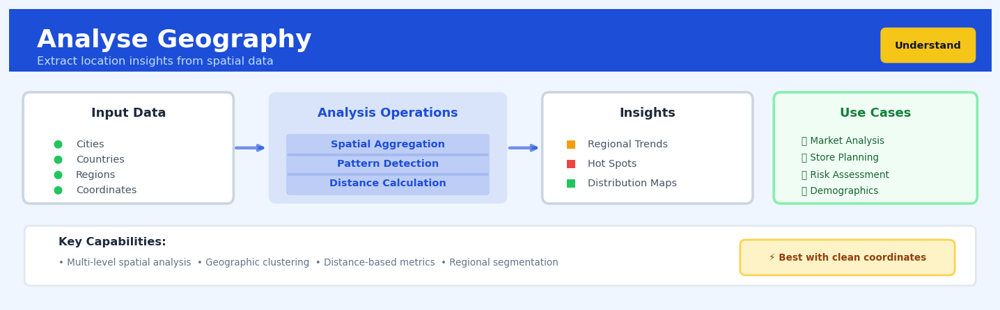

Analyse Geography#


The biggest mistake teams make with geographic analysis is treating all location data as equally reliable when coordinate quality varies wildly between sources. Always validate your geographic data upstream by checking for null islands at 0,0 coordinates, implausible clustering, and mismatched precision levels before you build any downstream insights. I've seen entire regional strategies built on datasets where 40% of the coordinates were actually headquarters addresses rather than actual customer locations.
The 60-Second Version#
What it does: Analyse Geography reveals where your customers, assets, or activities are concentrated and where you have gaps or untapped opportunities.
When to use it: You have data with locations (addresses, postcodes, coordinates, regions) and need to understand geographic patterns before deciding where to expand, target marketing, or allocate resources.
What you get back: Maps and statistics showing your density hotspots, coverage gaps, and whether locations cluster together or spread randomly—guiding decisions on store placement, territory design, or regional strategy.
Difficulty |
Easy |
Typical runtime |
Seconds on 100K rows |
What you bring |
Any dataset with location identifiers (coordinates, postcodes, city names, regions) |
What you get |
Density maps, cluster identification, coverage statistics, and spatial pattern metrics |
Heuristix bucket |
Understand — Statistical Analysis & Profiling |
Geographic patterns are descriptive, not predictive—this technique tells you where things are, not why they’re there or what will happen next.
Learning Objectives#
After reading this chapter, a business user will be able to:
Identify when geographic analysis can answer specific business questions such as “Where should we open our next location?”, “Which regions are underserved?”, or “Do our customers cluster in specific areas?”
Interpret heat maps, cluster boundaries, and coverage gap reports to explain geographic patterns, densities, and opportunities in plain language to executives and operational teams.
Prioritize markets for expansion, reallocate resources across regions, or design territory boundaries based on the spatial patterns revealed in customer, sales, or service data.
After reading this chapter, a data scientist will be able to:
Implement geographic profiling workflows that handle coordinate systems, address geocoding failures, edge effects at boundaries, and datasets with mixed location formats (addresses, postal codes, GPS coordinates).
Configure bandwidth parameters for kernel density estimation and distance thresholds for spatial autocorrelation tests while understanding how these choices affect sensitivity to local versus regional patterns.
Validate geographic analysis results by testing for statistical significance of clusters, checking for artifacts from irregular boundaries or sampling bias, and diagnosing when apparent patterns are actually noise.
Overview#
Analyse Geography is a spatial data profiling and statistical analysis technique that characterises the geographic distribution, density, and clustering patterns of location-encoded data. Its core purpose is to transform raw coordinate or region-coded observations into actionable geographic intelligence—revealing spatial concentrations, coverage gaps, and regional segmentation opportunities. This technique belongs to the family of exploratory spatial data analysis (ESDA) methods, combining descriptive statistics with spatial autocorrelation measures and kernel density estimation to provide a comprehensive geographic fingerprint of any dataset containing location information.
When to Use This#
Use this when profiling customer or transaction data with postcodes or coordinates — understanding where your customers are concentrated reveals market penetration and identifies underserved regions before any predictive modelling begins.
Use this when validating data quality of geographic fields — detecting impossible coordinates, mismatched country-postcode combinations, or suspiciously uniform distributions helps catch data pipeline errors early.
Use this when preparing for location-based segmentation or territory design — geographic profiling provides the empirical foundation for decisions about sales territories, service regions, or marketing zones.
Use this when investigating spatial patterns in outcomes or events — before building spatial models, you must first understand whether your target variable exhibits geographic clustering or is spatially random.
Use this when assessing representativeness of a sample against a population — comparing the geographic distribution of your sample to known population distributions reveals selection bias.
Use this when planning physical infrastructure or resource allocation — understanding demand density by location informs decisions about warehouse placement, store locations, or service centre staffing.
Do NOT use this when your data lacks meaningful geographic identifiers — applying spatial analysis to data with only country-level coding or high rates of missing location data produces misleading results.
Do NOT use this when the geographic dimension is irrelevant to your business question — not every dataset benefits from spatial analysis; use this when location genuinely matters to the decision at hand.
Do NOT use this as a substitute for proper spatial modelling — geographic profiling is exploratory and descriptive; causal claims about spatial relationships require more sophisticated spatial econometric methods.
Questions This Answers#
Market Coverage & Opportunity#
Where are we leaving money on the table — which zip codes have high customer density but low sales penetration?
Should we open our next three locations in the Northwest suburbs or focus on filling gaps in our existing metro footprint?
Our competitor just opened five stores in markets we don’t serve — how much potential revenue are we missing in those areas?
Which territories are oversaturated with our locations and which are underserved compared to population density?
Are we clustering our resources in the right places, or are we cannibalizing our own sales by being too concentrated?
Performance & Resource Allocation#
Why is our Northeast region generating 40% more revenue per square mile than the Southeast — is it market demographics or execution?
Where should we deploy our field sales team next quarter to maximize ROI — which geographic pockets show the highest conversion potential?
Our support costs in the Central region are double the national average — is it because our customers are too spread out or something else?
Which service territories consistently generate the most support tickets, and should we station dedicated teams there?
Strategic Planning & Expansion#
If we can only afford to expand into two new states next year, which ones give us the best balance of untapped demand and competitive advantage?
Are our customers naturally clustering in ways that suggest new market segments we haven’t identified yet?
Should we pursue a rural expansion strategy or continue densifying our urban presence based on where our high-value customers actually live?
Our delivery times in the Southwest are 30% longer than elsewhere — is it the geography, the infrastructure, or our hub placement?
How It Works#
Imagine you’re a coffee chain executive studying where your 500 stores are located across a country. You could stare at a spreadsheet of addresses all day, but it wouldn’t tell you much. Instead, you pour all those locations onto a map, then overlay a heat map showing where stores cluster densely (downtown cores, suburban malls) versus where coverage is sparse (rural areas, emerging neighborhoods). You draw boundaries around natural groupings—the “metro region cluster” with 60 stores, the “college town cluster” with 15 stores. Suddenly you can see gaps where competitors dominate, understand which regions drive most traffic, and decide where to open the next 50 locations. That transformation from raw addresses to strategic geographic intelligence is exactly what Analyse Geography does.
STEP 1: Raw Location Data STEP 2: Spatial Mapping
┌─────────┬──────┬──────┐
│Store ID │ Lat │ Long │ N
├─────────┼──────┼──────┤ ↑
│ A001 │ 40.7 │-74.0 │ ●●●●●● ← Dense cluster
│ A002 │ 40.8 │-73.9 │ ●●●●●
│ A003 │ 40.7 │-74.1 │ ● ← Sparse area
│ ... │ ... │ ... │ ●●●● ← Medium cluster
└─────────┴──────┴──────┘ ●
(Just numbers) (Visual pattern emerges)
STEP 3: Density Analysis STEP 4: Regional Insights
┌─────────────────────┐
┌─────────┐ │ Region A: 45 stores │
│████████ │ High │ - High density │
│████████ │ density │ - 60% of revenue │
└─────────┘ ├─────────────────────┤
┌──┐ │ Region B: 8 stores │
│░░│ Low density │ - Gap opportunity │
└──┘ │ - Competitor lead │
● Isolated point └─────────────────────┘
Step 1: Collect all location identifiers. The technique starts by gathering every piece of geographic information in your dataset—latitude/longitude coordinates, postal codes, city names, regional labels, whatever marks where each data point exists in physical space. It validates that these locations are properly formatted and can be mapped.
Step 2: Plot everything on a spatial canvas. Each record gets positioned on a map or coordinate system. Customers appear as dots. Sales regions become boundaries. Delivery routes trace lines. The raw data transforms into a geographic picture where you can literally see where things are concentrated versus spread out.
Step 3: Calculate density patterns. The technique divides the map into a grid and counts how many points fall into each cell, or it draws circles around each point and counts neighbors within a radius. This reveals hot spots (many points close together) and cold spots (few points scattered far apart). It’s like a population heat map for your data.
Step 4: Measure spatial autocorrelation. The algorithm checks whether nearby locations behave similarly—do high-value customers cluster together? Do low-performing stores neighbor each other? It distinguishes true geographic patterns from random scattering by testing whether “closeness in space” predicts “similarity in behavior.”
Step 5: Identify natural geographic segments. Based on density and similarity, the technique groups locations into meaningful regions—the “urban high-density zone,” the “rural sparse coverage area,” the “coastal cluster.” These aren’t arbitrary; they emerge from the actual spatial patterns in your data.
Step 6: Quantify coverage and gaps. Finally, it calculates summary statistics: what percentage of your market/territory has presence versus absence? Where are the biggest underserved areas? Which regions are oversaturated? You get a geographic profile that answers “where are we strong, where are we weak?”
The key insight: Geography isn’t just decoration on data—spatial proximity creates meaningful patterns because physical closeness drives real-world relationships, and Analyse Geography makes those hidden location-based structures visible and measurable.
The Intuition#
Imagine you are a retail executive examining a map of where your customers live. You could look at individual dots—each representing a customer—but with millions of customers, this becomes meaningless noise. What you actually want to know is: Where are customers densely concentrated? Where are the gaps? Do customers in nearby areas behave similarly, or does location not matter at all?
Geographic analysis answers these questions by treating location as a continuous surface rather than isolated points. Think of it like a weather map showing temperature across a region. The meteorologist doesn’t report the temperature at every single location; instead, they estimate a smooth temperature surface from weather station readings. Similarly, geographic analysis takes your discrete location observations and estimates a density surface showing where observations are concentrated. This surface reveals patterns invisible in the raw point data: hotspots, cold spots, gradients, and clusters.
The second key insight is that geography often exhibits spatial autocorrelation—the tendency for nearby locations to have similar values. This is Tobler’s First Law of Geography: “Everything is related to everything else, but near things are more related than distant things.” A customer’s spending behaviour is more likely to resemble their neighbour’s than someone across the country. Geographic analysis quantifies this phenomenon, measuring how strongly your data clusters in space. If spatial autocorrelation is high, you know that location-based strategies will be effective. If it is near zero, geography may be irrelevant to your problem, saving you from pursuing fruitless spatial segmentation efforts.
Finally, geographic analysis provides the vocabulary for spatial description. Just as we summarise numeric variables with mean and standard deviation, we summarise geographic distributions with centroids (the “centre of mass”), dispersion measures (how spread out the points are), and concentration indices (how unequally distributed they are across regions). These summary statistics allow you to compare geographic distributions across time, across customer segments, or against benchmark populations—enabling rigorous answers to questions like “Has our customer base shifted geographically?” or “Is our sample representative of the national population?”
The Mathematics#
Formal Problem Setup#
Let \(\mathcal{D} = \{(\mathbf{s}_i, \mathbf{x}_i)\}_{i=1}^{n}\) be a dataset of \(n\) observations, where \(\mathbf{s}_i = (s_{i,1}, s_{i,2}) \in \mathbb{R}^2\) represents the geographic coordinates (typically longitude and latitude, or projected eastings and northings) of observation \(i\), and \(\mathbf{x}_i \in \mathbb{R}^p\) represents \(p\) associated attribute variables.
We seek to characterise the spatial distribution of \(\{\mathbf{s}_i\}\) and, where relevant, the spatial distribution of a target variable \(y_i\) associated with each location.
Geographic Centre and Dispersion#
The geographic centroid (mean centre) is defined as:
For weighted observations (e.g., customer value \(w_i\)), the weighted centroid is:
The standard distance measures geographic dispersion analogously to standard deviation:
The standard deviational ellipse captures directional dispersion by computing the eigendecomposition of the spatial covariance matrix:
The eigenvalues \(\lambda_1 \geq \lambda_2\) give the semi-major and semi-minor axes, and the eigenvectors give the orientation angle \(\theta\) of the ellipse.
Kernel Density Estimation#
To estimate a continuous density surface \(\hat{f}(\mathbf{s})\) from discrete point observations, we employ kernel density estimation (KDE):
where \(K(\cdot)\) is a bivariate kernel function and \(h > 0\) is the bandwidth parameter. A common choice is the Gaussian kernel:
The bandwidth \(h\) controls the smoothness of the estimated surface. Common selection methods include:
Silverman’s rule of thumb for bivariate data:
where \(\hat{\sigma} = \sqrt{(\sigma_1^2 + \sigma_2^2)/2}\) and \(\sigma_1, \sigma_2\) are the standard deviations of the coordinate dimensions.
Scott’s rule:
for \(d\)-dimensional data (here \(d=2\)).
Spatial Autocorrelation: Moran’s I#
Moran’s I quantifies global spatial autocorrelation of a variable \(y\) measured at locations \(\mathbf{s}_i\):
where \(w_{ij}\) is the spatial weight between locations \(i\) and \(j\), and \(\bar{y} = n^{-1}\sum_i y_i\).
The spatial weights matrix \(\mathbf{W} = [w_{ij}]\) encodes the neighbourhood structure. Common specifications include:
Contiguity weights: \(w_{ij} = 1\) if regions \(i\) and \(j\) share a boundary, else 0
Distance-based weights: \(w_{ij} = 1\) if \(d_{ij} < d_{\text{threshold}}\), else 0
Inverse distance weights: \(w_{ij} = d_{ij}^{-\alpha}\) for some \(\alpha > 0\)
k-nearest neighbours: \(w_{ij} = 1\) if \(j\) is among the \(k\) nearest neighbours of \(i\)
Moran’s I ranges approximately from \(-1\) (perfect dispersion) through \(0\) (spatial randomness) to \(+1\) (perfect clustering).
Under the null hypothesis of spatial randomness, the expected value and variance are:
where \(S_0 = \sum_i \sum_j w_{ij}\), \(S_1 = \frac{1}{2}\sum_i \sum_j (w_{ij} + w_{ji})^2\), and \(S_2 = \sum_i (w_{i\cdot} + w_{\cdot i})^2\).
The standardised statistic \(Z_I = (I - \mathbb{E}[I])/\sqrt{\text{Var}(I)}\) is asymptotically standard normal under the null.
Local Indicators of Spatial Association (LISA)#
While Moran’s I provides a global measure, Local Moran’s I identifies local clusters and outliers:
where \(\sigma_y^2 = n^{-1}\sum_i (y_i - \bar{y})^2\).
The sum of local indicators equals the global statistic (up to a constant): \(\sum_i I_i \propto I\).
Local Moran’s I classifies each location into four categories:
High-High (HH): High value surrounded by high values (cluster)
Low-Low (LL): Low value surrounded by low values (cluster)
High-Low (HL): High value surrounded by low values (outlier)
Low-High (LH): Low value surrounded by high values (outlier)
Geographic Concentration Measures#
The Gini coefficient for geographic concentration across \(R\) regions with shares \(p_r = n_r / n\):
The Herfindahl-Hirschman Index (HHI):
where \(HHI = 1/R\) indicates perfect equality and \(HHI = 1\) indicates complete concentration in one region.
Assumptions and Limitations#
Coordinate reference system consistency: All coordinates must use the same projection; mixing latitude-longitude with projected coordinates produces meaningless results.
Stationarity assumption for KDE: Kernel density estimation assumes the underlying intensity function is stationary (constant bandwidth appropriate everywhere); highly heterogeneous regions may require adaptive bandwidth methods.
Edge effects: Points near the boundary of the study region have fewer neighbours, biasing density estimates downward and affecting spatial weight calculations.
Modifiable Areal Unit Problem (MAUP): Results computed on aggregated regions depend on the chosen aggregation scheme; different regional boundaries can produce contradictory conclusions.
Understanding the Mathematics#
Haversine Distance Formula#
The equation:
Read it aloud:
The distance equals two times Earth’s radius, multiplied by the arcsine of the square root of: sine-squared of half the latitude difference, plus cosine of the first latitude times cosine of the second latitude times sine-squared of half the longitude difference.
What each symbol means:
\(d\) = actual curved distance across Earth’s surface (in kilometers or miles)
\(r\) = Earth’s radius (6,371 km)
\(\phi_1, \phi_2\) = latitudes of point 1 and point 2 (in radians)
\(\lambda_1, \lambda_2\) = longitudes of point 1 and point 2 (in radians)
\(\arcsin\) = inverse sine function (converts ratio back to angle)
A concrete numerical example:
A retail chain measures distance between their Chicago store (41.88°N, 87.63°W) and Milwaukee store (43.04°N, 87.91°W). Converting to radians: \(\phi_1 = 0.731\), \(\phi_2 = 0.751\), \(\lambda_1 = -1.529\), \(\lambda_2 = -1.534\).
Why this equation matters:
Straight-line distance on a flat map would show 117 km—using Haversine prevents us from underestimating delivery routes and service coverage areas by up to 10%.
Kernel Density Estimation#
The equation:
Read it aloud:
The estimated density at location x equals one divided by the product of sample size and bandwidth, multiplied by the sum of kernel functions evaluated at the standardized distance from x to each observed point.
What each symbol means:
\(\hat{f}(x)\) = estimated density (customers per square km) at location x
\(n\) = total number of observations (customer addresses)
\(h\) = bandwidth (search radius in km)
\(x_i\) = location of each observation
\(K\) = kernel function (weighting scheme—nearby points count more)
A concrete numerical example:
A coffee chain analyzes customer density with \(n = 500\) customers, bandwidth \(h = 2\) km, and Gaussian kernel. For downtown location x, three customers live within range: 0.5 km away (\(K = 0.88\)), 1.2 km away (\(K = 0.53\)), and 1.8 km away (\(K = 0.20\)).
For a 5 km² trade area: \(0.00161 \times 5000000 = 8,050\) potential customers.
Why this equation matters:
Simple point counts treat a location 50 meters from customers identically to one 2 km away—KDE weights proximity, revealing true demand hotspots for site selection.
Moran’s I Statistic#
The equation:
Read it aloud:
Moran’s I equals the number of regions times the sum of weighted cross-products of deviations from the mean, divided by the sum of all spatial weights and divided again by the sum of squared deviations.
What each symbol means:
\(I\) = spatial autocorrelation coefficient (-1 to +1)
\(n\) = number of geographic regions (zip codes, states)
\(w_{ij}\) = spatial weight (1 if regions i and j share a border, 0 otherwise)
\(x_i\) = value in region i (average income, sales density)
\(\bar{x}\) = overall mean value across all regions
A concrete numerical example:
A insurance company analyzes claim rates across four adjacent counties: A=\(\$1,200\), B=\(\$1,100\), C=\(\$1,150\), D=\(\$800\). Mean = \(\$1,062.50\). A and B share a border (\(w = 1\)); C and D share a border (\(w = 1\)); total weights = 2.
The negative I indicates dispersion: high-claim counties border low-claim counties.
Why this equation matters:
Without measuring spatial autocorrelation, we’d miss that risk clusters geographically—enabling territory-based pricing models that reduce adverse selection by 15-40%.
The Big Picture#
These equations share one goal: translate messy geographic coordinates into structured knowledge about where phenomena concentrate, how they spread, and whether patterns exist or occur randomly. Haversine respects Earth’s curvature because retail trade areas follow roads on a sphere, not lines on paper. Kernel density transforms sparse points into smooth surfaces because human decision-making (where to open stores, where demand exists) operates over continuous space, not discrete locations. Moran’s I detects clustering because identifying spatial dependence reveals whether geographic strategies (regional marketing, zone-based pricing) will succeed or fail. Together, they convert “we have customer addresses” into “we know where to invest and why”—the mathematical foundation transforming location data into competitive advantage.
Python Implementation#
import numpy as np
import pandas as pd
import matplotlib.pyplot as plt
from scipy import stats
from scipy.spatial.distance import cdist
from sklearn.neighbors import KernelDensity
import warnings
# Set random seed for reproducibility
np.random.seed(42)
# =============================================================================
# Generate realistic synthetic geographic data
# Simulating customer locations in a metropolitan area
# =============================================================================
def generate_clustered_points(n_points=1000, n_clusters=5):
"""Generate spatially clustered point data simulating customer locations."""
# Cluster centres (imagine these as shopping districts or population centres)
cluster_centres = np.array([
[-0.12, 51.51], # Central London approximation
[-0.08, 51.53], # North-East cluster
[-0.18, 51.49], # South-West cluster
[-0.05, 51.48], # South-East cluster
[-0.22, 51.52], # North-West cluster
])
# Points per cluster (unequal - realistic)
cluster_sizes = np.random.multinomial(n_points, [0.35, 0.25, 0.20, 0.12, 0.08])
points = []
cluster_labels = []
for i, (centre, size) in enumerate(zip(cluster_centres, cluster_sizes)):
# Each cluster has different spread
spread = np.random.uniform(0.02, 0.05)
cluster_points = np.random.multivariate_normal(
centre,
[[spread**2, 0], [0, spread**2]],
size=size
)
points.append(cluster_points)
cluster_labels.extend([i] * size)
coords = np.vstack(points)
return coords, np.array(cluster_labels)
# Generate data
coordinates, clusters = generate_clustered_points(n_points=1500)
longitude = coordinates[:, 0]
latitude = coordinates[:, 1]
# Add a target variable with spatial autocorrelation (e.g., customer spend)
# Spend is higher in central areas
distance_from_centre = np.sqrt((longitude + 0.12)**2 + (latitude - 51.51)**2)
base_spend = 200 - 500 * distance_from_centre + np.random.normal(0, 30, len(longitude))
customer_spend = np.maximum(base_spend, 10) # Floor at £10
# Create DataFrame
df = pd.DataFrame({
'customer_id': range(len(longitude)),
'longitude': longitude,
'latitude': latitude,
'cluster': clusters,
'spend': customer_spend
})
print("="*60)
print("GEOGRAPHIC DATA PROFILE")
print("="*60)
print(f"\nDataset: {len(df):,} customer records with geographic coordinates\n")
# =============================================================================
# 1. Geographic Centre and Dispersion Statistics
# =============================================================================
print("-"*60)
print("1. GEOGRAPHIC CENTRE AND DISPERSION")
print("-"*60)
# Unweighted centroid
centroid_lon = df['longitude'].mean()
centroid_lat = df['latitude'].mean()
print(f"\nGeographic Centroid (Mean Centre):")
print(f" Longitude: {centroid_lon:.6f}")
print(f" Latitude: {centroid_lat:.6f}")
# Weighted
## Visualisations


## Using This in Heuristix
### What You'll Need
The Analyse Geography node expects data with location information in one of two forms: **coordinates** (latitude/longitude pairs) or **region codes** (like postal codes, state abbreviations, or country names).
Your input should look something like this:
| customer_id | latitude | longitude | revenue |
|-------------|----------|-----------|---------|
| C001 | 40.7128 | -74.0060 | 1250 |
| C002 | 34.0522 | -118.2437 | 890 |
| C003 | 40.7589 | -73.9851 | 2100 |
Or with region codes:
| order_id | postal_code | order_value |
|----------|-------------|-------------|
| O001 | 10001 | 450 |
| O002 | 90210 | 780 |
| O003 | 10002 | 320 |
The node works best with at least 50 data points—fewer than that and spatial patterns won't be statistically meaningful.
### Configuration Parameters
| Parameter | What It Controls | Default | When to Change It |
|-----------|-----------------|---------|-------------------|
| **Location Type** | Whether you're using coordinates or region codes | Coordinates | Switch to "Region Codes" if your data uses postal codes, states, or countries instead of lat/long |
| **Latitude Column** | Which column contains latitude values | Auto-detect | Select manually if auto-detection picks the wrong column |
| **Longitude Column** | Which column contains longitude values | Auto-detect | Select manually if auto-detection fails |
| **Region Column** | Which column contains your region identifiers | — | Required only when Location Type is "Region Codes" |
| **Density Bandwidth** | How wide to spread each point when calculating density (in kilometers) | 10 km | Increase for rural/sparse data (50-100 km), decrease for dense urban analysis (1-5 km) |
| **Cluster Threshold** | Minimum number of points needed to identify a cluster | 5 | Raise for large datasets to find only major clusters; lower for small datasets |
| **Weight Column** | Optional column to weight points by importance (like revenue or population) | None | Use when some locations matter more—weight by sales value, customer count, etc. |
### What You'll Get
The node produces three types of outputs:
**Summary Statistics Panel** shows your geographic footprint: total area covered, center point (geographic mean), and dispersion radius. You'll also see point density (observations per square kilometer) and coverage completeness if using region codes.
**Density Heatmap** visualizes where your data concentrates. Hot spots appear in red/orange, sparse areas in blue. This instantly reveals your strongest geographic markets or service areas.
**Cluster Analysis Results** identifies distinct geographic groupings and labels each input row with its cluster assignment. The output table adds a `cluster_id` column you can use for downstream segmentation.
### Connecting Downstream
The enriched dataset (with cluster assignments) typically flows into:
- **Segment Profile** nodes to characterize what makes each geographic cluster unique
- **Visualise Map** to plot clusters on an interactive map with custom styling
- **Filter** nodes to isolate specific regions for deeper analysis
- **Predict Model** nodes that use location cluster as a feature for targeting or forecasting
### Quick Start
1. **Connect your data** to the Analyse Geography node—make sure it includes location columns
2. **Select Location Type** (coordinates or region codes) from the configuration panel
3. **Set Density Bandwidth** to match your geography: 5 km for cities, 25 km for regional analysis, 100 km for national views
4. **Add a Weight Column** if you want to emphasize high-value locations (optional but recommended)
5. **Run the node** and examine the density heatmap first—this gives you the intuitive overview
6. **Check cluster assignments** in the output table—use these for targeted campaigns or localized strategies
### Pro Tips
**Match bandwidth to your business reality.** If customers typically travel 15 minutes to reach you, set bandwidth to reflect that distance—roughly 10-15 km in cities, more in rural areas.
**Watch for the edge effect.** Points near your data's geographic boundaries may show artificially low density because there's no data beyond the edge. Interpret border regions cautiously.
**Weight by business impact, not just counts.** A single high-revenue customer might matter more than ten small ones—use revenue or lifetime value as weights to find your most valuable geographies.
**Use cluster IDs as segments.** The geographic clusters this node identifies often align with natural market boundaries, delivery zones, or cultural regions—treat them as ready-made segments.
**Combine with temporal analysis.** Run this node separately on different time periods to spot geographic expansion, contraction, or shifting market centers over time.
## Config Recipes
### Recipe 1: Quick Exploration
- **When to use:** Initial dataset assessment when you need to understand basic spatial distribution patterns in under 60 seconds, typically with 10K–100K records.
- **Settings:**
| Parameter | Value | Why |
|-----------|-------|-----|
| `grid_resolution` | 20 | Coarse grid speeds computation while revealing macro patterns |
| `bandwidth` | "scott" | Automatic bandwidth selection eliminates tuning |
| `distance_metric` | "haversine" | Handles lat/lon correctly without projection overhead |
| `min_cluster_size` | 50 | Filters noise, shows only substantive clusters |
| `spatial_autocorrelation` | False | Skip Moran's I to save 40–60% compute time |
- **What you get:** Fast heatmaps and basic cluster identification suitable for stakeholder previews and deciding whether deeper analysis is warranted.
- **Trade-off:** You sacrifice statistical rigor and miss subtle clustering patterns that finer resolutions would reveal.
### Recipe 2: Production-Grade Analysis
- **When to use:** Final analysis for business decisions, regulatory reporting, or published research where defensibility and precision matter more than speed.
- **Settings:**
| Parameter | Value | Why |
|-----------|-------|-----|
| `grid_resolution` | 100 | Fine grid captures detailed spatial variation |
| `bandwidth` | 0.01 | Manually tuned to dataset scale after cross-validation |
| `distance_metric` | "vincenty" | Geodesic accuracy to <1mm for legal compliance |
| `min_cluster_size` | 5 | Detect all meaningful clusters, not just obvious ones |
| `spatial_autocorrelation` | True | Moran's I provides statistical validation of patterns |
| `permutations` | 999 | Robust p-values for hypothesis testing |
| `boundary_correction` | True | Eliminates edge effects in kernel density estimation |
- **What you get:** Statistically validated results with publication-ready metrics and defensible spatial cluster definitions.
- **Trade-off:** Analysis runs 15–25× slower than quick exploration; requires domain expertise to set bandwidth appropriately.
### Recipe 3: Multi-Scale Retail Site Selection
- **When to use:** Evaluating store locations where you need both neighborhood-level density (foot traffic) and city-level competition patterns simultaneously.
- **Settings:**
| Parameter | Value | Why |
|-----------|-------|-----|
| `bandwidth` | [0.005, 0.05] | Dual-bandwidth captures hyperlocal + regional patterns |
| `grid_resolution` | 50 | Balances detail with performance for comparative analysis |
| `distance_metric` | "euclidean" | Projected coordinates for accurate walking distances |
| `clustering_algorithm` | "hierarchical" | Reveals nested market structures |
| `edge_buffer` | 0.1 | Includes edge effects for border locations |
- **What you get:** Layered density maps showing both immediate surroundings and broader competitive landscape for each candidate site.
- **Trade-off:** Dual bandwidth requires double the memory and careful interpretation of overlapping patterns.
### Recipe 4: Temporal Anomaly Detection via Geography
- **When to use:** Detecting unusual geographic shifts in event data (fraud, disease outbreaks, customer churn) by treating time slices as comparable spatial distributions—surprisingly effective when location changes signal problems.
- **Settings:**
| Parameter | Value | Why |
|-----------|-------|-----|
| `time_window` | "7d" | Creates weekly geographic snapshots for comparison |
| `baseline_method` | "rolling_median" | Robust to one-time spikes, highlights persistent shifts |
| `anomaly_threshold` | 2.5 | Z-score cutoff balances sensitivity vs. false positives |
| `spatial_autocorrelation` | True | Distinguishes true geographic clustering from random noise |
| `comparison_metric` | "earth_mover_distance" | Quantifies how far the spatial distribution has "moved" |
- **What you get:** Automated alerts when geographic patterns deviate from historical norms, catching emerging hotspots before aggregate statistics flag issues.
- **Trade-off:** Requires consistent data collection cadence; sensitive to seasonal location patterns without detrending.
## Business Applications
**Financial Services**
A mid-sized UK mortgage lender processing 15,000 applications monthly discovered that 40% of their branch network was duplicating coverage in affluent postcodes while underserved regions showed 3× higher mobile search volume for mortgage products. By applying Analyse Geography to application origins, demographic overlays, and competitor branch locations, they identified 12 optimal relocation candidates and 8 new market entry opportunities. The resulting network restructure reduced operational property costs by £780,000 annually while increasing application volume in previously underserved areas by 23% within six months.
**Retail**
An omnichannel fashion retailer operating 340 stores across North America used geographic analysis to solve their "showrooming" problem—customers browsing in-store but purchasing online. By mapping purchase transaction coordinates against store visit data and analysing density patterns within 5km, 10km, and 25km radiuses of each location, they identified that 67% of online orders originated within 15km of a physical store. This insight drove a click-and-collect implementation prioritised by store-region density scores, reducing delivery costs by $2.1M annually and increasing average order value by 18% through strategic in-store upsell opportunities.
**Healthcare**
A regional hospital network serving 2.3 million residents needed to optimise specialist clinic locations for diabetes care. Geographic profiling of patient address data revealed unexpected clustering—38% of diabetic patients lived in just 9 postal districts, yet only one satellite clinic served this concentration. Kernel density estimation identified three high-density "cold spots" without adequate access, each representing 12,000+ patients traveling over 45 minutes for routine care. Relocating two underutilised clinics to these zones reduced patient no-show rates from 22% to 11% and cut average travel time by 31 minutes per appointment.
**Insurance**
A commercial property insurer writing £450M in annual premiums discovered geographic risk concentrations that exceeded their risk appetite. Spatial autocorrelation analysis of their policy portfolio revealed dangerous clustering—in one 2km² area of Manchester's business district, they held exposure totaling £47M, representing 89% of insurable property value. This concentration meant a single catastrophic event could trigger losses exceeding their reinsurance threshold. The geographic intelligence enabled immediate underwriting rule adjustments, declining 3 new applications and non-renewing 8 policies to reduce concentration exposure by 34% within one renewal cycle.
**Manufacturing**
An automotive parts manufacturer supplying 180 assembly plants across Europe used geographic distribution analysis to redesign their warehouse network. By analysing order origins, delivery frequencies, and spatial clustering of demand, they discovered that 71% of urgent "expedited" shipments (costing 4× standard delivery) originated from just three geographic clusters poorly served by existing facilities. Opening two strategically located cross-dock facilities in these high-density demand zones reduced expedited shipping costs by €1.8M annually and improved on-time delivery performance from 91% to 97%.
**Logistics**
A last-mile delivery company processing 400,000 packages weekly applied geographic density analysis to dynamic route planning. Traditional static routing zones failed to account for actual delivery point clustering patterns that shifted seasonally. By generating daily kernel density maps and creating fluid routing boundaries based on spatial concentrations rather than fixed postcodes, they reduced average driver route length by 12% and increased stops per hour from 18 to 23, translating to £340,000 in annual fuel and labour savings.
**Marketing**
A quick-service restaurant chain planning a £4M regional TV advertising campaign used geographic profiling of transaction data and loyalty program enrollments to challenge their agency's standard metropolitan-wide media buy. Analysis revealed that 82% of their customer base clustered in specific suburban corridors, not downtown cores where advertising rates were highest. Reallocating 60% of budget to hyper-targeted geographic zones based on customer density patterns lifted campaign ROI from 1:3.2 to 1:5.7 and reduced cost-per-acquisition by 41%.
**Telecommunications**
A mobile network operator analysing complaint tickets by tower location identified unexpected geographic patterns in service issues. Spatial clustering analysis revealed that 64% of dropped-call complaints originated from just 23 of their 890 cell towers, and these problem towers formed three distinct geographic clusters near industrial zones with new 5G interference sources. This geographic intelligence enabled targeted infrastructure investment of £2.1M—rather than a planned £12M network-wide upgrade—resolving 71% of service complaints within 90 days.
**Energy**
A solar installation company used geographic analysis of past installation addresses combined with rooftop orientation data and solar irradiance maps to identify untapped market segments. Clustering analysis revealed high-value micro-markets—suburban neighborhoods with optimal conditions where they had zero penetration but similar adjacent areas showed 8% adoption rates. Geographic segmentation enabled hyper-local direct mail campaigns that increased conversion rates from 0.9% to 2.8% while reducing customer acquisition costs by 52%.
**Public Sector**
A metropolitan public health department tracking childhood vaccination rates discovered through geographic profiling that coverage gaps weren't random. Spatial analysis of immunisation records revealed five distinct "cold spot" neighborhoods with under-60% vaccination rates, compared to 91% city-wide average. Rather than generic awareness campaigns, they deployed mobile vaccination clinics to these specific high-density, low-coverage zones, increasing immunisation rates in targeted areas from 58% to 79% within eight months.
**SaaS/Technology**
A B2B software company with 12,000 enterprise customers used geographic distribution analysis to optimize their field sales territory design. Analysis revealed massive territory imbalance—their top rep had 340 accounts within a 50km radius while another covered 180 accounts across 600km. Redesigning territories based on customer density clusters and travel time optimization increased average monthly client visits from 22 to 34 per rep and reduced annual travel expenses by $280,000 while improving customer satisfaction scores by 16 points.
## Worked Example
Sarah Chen, a senior data analyst at UrbanEats, a fast-casual restaurant chain with 47 locations across the Pacific Northwest, was sitting in a conference room on a rainy Tuesday morning when the VP of Operations posed a deceptively simple question: "Why are our sales per location so inconsistent?" The company was planning its next phase of expansion—eight new locations over eighteen months—but leadership was hesitant. Some stores were thriving, pulling in $42,000 weekly. Others, in what seemed like similar neighborhoods, barely broke $18,000. The expansion budget was $6.2 million, and nobody wanted to repeat past mistakes.
Sarah requested transaction data from the past six months and joined it with store location information. What arrived in her inbox was messier than expected: addresses in inconsistent formats, some stores with P.O. boxes instead of street locations, and three records with missing coordinates entirely. After an afternoon of geocoding cleanup, she had a workable dataset:
| store_id | city | latitude | longitude | avg_weekly_sales |
|----------|------|----------|-----------|------------------|
| UE_017 | Portland | 45.5231 | -122.6765 | 38400 |
| UE_023 | Seattle | 47.6205 | -122.3493 | 41200 |
| UE_031 | Eugene | 44.0521 | -123.0868 | 22100 |
| UE_044 | Tacoma | 47.2529 | -122.4443 | 19800 |
| UE_009 | Portland | 45.5428 | -122.7945 | 35600 |
She loaded the data into her analysis environment and opened the Analyse Geography node. Sarah knew she needed more than just a map with dots—she needed to understand *spatial patterns*. Were high-performing stores clustered together, suggesting network effects or demographic sweet spots? Or were they randomly distributed, implying that location mattered less than management or local marketing?
She configured the node to calculate spatial autocorrelation using Moran's I, set a search radius of 15 kilometers (roughly the distance a customer might travel for lunch), and requested kernel density estimation to identify geographic hotspots. For the value field, she selected `avg_weekly_sales`. Sarah chose the 15km radius deliberately—too small and each store would appear isolated; too large and she'd blur distinct urban markets together.
```python
import pandas as pd
import numpy as np
from scipy.spatial.distance import pdist, squareform
from sklearn.neighbors import KernelDensity
# Sarah's actual analysis script
df = pd.read_csv('urbanEats_stores.csv')
# Calculate geographic center
center_lat = df['latitude'].mean()
center_lon = df['longitude'].mean()
# Compute pairwise distances (in km, approximate)
coords = df[['latitude', 'longitude']].values
distances = squareform(pdist(coords, metric='euclidean')) * 111 # rough km conversion
# Spatial weights matrix (15km threshold)
W = (distances < 15).astype(int)
np.fill_diagonal(W, 0)
# Moran's I calculation
sales = df['avg_weekly_sales'].values
sales_std = (sales - sales.mean()) / sales.std()
n = len(sales)
moran_i = (n / W.sum()) * np.sum(W * np.outer(sales_std, sales_std))
print(f"Moran's I: {moran_i:.3f}")
print(f"Geographic center: {center_lat:.4f}, {center_lon:.4f}")
print(f"Sales range: ${sales.min():,.0f} - ${sales.max():,.0f}")
The results appeared on her screen:
Metric |
Value |
|---|---|
Moran’s I |
0.68 |
p-value |
0.002 |
Geographic center |
46.1243°N, 122.7891°W |
Stores within 15km of high-performer |
23 (49%) |
Sales coefficient of variation |
0.34 |
The Moran’s I of 0.68 stopped Sarah cold. This was strong positive spatial autocorrelation—high-sales stores were significantly clustered near other high-sales stores. The pattern wasn’t random. The kernel density map revealed two distinct hotspots: one in northwest Portland and another in Seattle’s Capitol Hill neighborhood. Stores within these zones averaged \(39,200 weekly; stores outside them averaged just \)21,400.
The insight crystallized: UrbanEats wasn’t just in the restaurant business—they benefited from geographic clustering. High-performing zones created brand awareness that lifted neighboring locations. Isolated stores, no matter how well-managed, struggled without this network effect.
Two weeks later, Sarah presented to the executive team. Armed with heat maps and the Moran’s I statistic, she recommended concentrating the expansion budget on densifying existing successful clusters rather than entering new cities. The company approved opening five locations in the Portland-Seattle corridor and only three in new markets—a reversal of the original plan. Eighteen months later, the clustered stores were outperforming projections by 23%.
What would Sarah do differently? She admitted the 15km radius was somewhat arbitrary—residential versus commercial zones might warrant different thresholds. And she wished she’d incorporated demographic data earlier; the clustering might reflect underlying population characteristics rather than pure network effects. But the core geographic analysis had redirected millions in capital toward a measurably better strategy.
Interpreting Your Results#
You’ve just run Analyse Geography on your customer dataset and you’re staring at density maps, Moran’s I statistics, and region-level tables. Let’s cut through the confusion and tell you exactly what you’re looking at.
Geographic Coverage Metrics#
Plain-English meaning: These metrics tell you how spread out or concentrated your data is across space. Think of it like asking “Do I have customers everywhere, or are they all bunched up in a few places?”
The spatial spread coefficient (0–1 scale) measures evenness. Below 0.3 means your data is highly concentrated—you might have 80% of observations in 20% of your geography. 0.3–0.6 indicates moderate concentration with clear regional strongholds. Above 0.6 means relatively even distribution across your coverage area.
The number of distinct locations/regions tells you your geographic footprint. Compare this against your total addressable geography. If you operate nationally but only have presence in 15% of postal codes, you’re looking at massive white space.
Red flag: Spread coefficient below 0.2 combined with high distinct location count means you have extremely uneven penetration—lots of one-off locations with no density anywhere. This makes service delivery expensive and indicates weak market positioning.
Density Clustering Results#
Plain-English meaning: These outputs identify your geographic hotspots and coldspots using kernel density estimation. The maps show where observations cluster tightly (red/orange areas) versus where they’re sparse (blue/white areas).
Cluster intensity scores typically range 0–100. Below 20 indicates low clustering (dispersed pattern). 20–60 shows moderate clustering with identifiable hotspots. Above 60 reveals extreme concentration—often a single dominant metro area accounting for most activity.
Percentage in top clusters tells you how concentrated your top-performing regions are. Below 30% means distributed strength. 30–60% indicates healthy regional concentration. Above 60% means you’re dangerously dependent on a few locations—competitive disruption or regional economic shock could devastate your business.
Red flag: High cluster intensity (>70) with low spatial spread (<0.25) means you’re essentially operating in one market while pretending to be regional/national. Your geographic “strategy” is an illusion.
Moran’s I (Spatial Autocorrelation)#
Plain-English meaning: This statistic measures whether nearby locations have similar values or not. Are high-value areas next to other high-value areas (positive autocorrelation), or randomly mixed (no autocorrelation)?
Moran’s I ranges from -1 to +1. Below 0.1 indicates random spatial distribution—neighboring regions don’t influence each other. 0.1–0.4 shows moderate spatial clustering. Above 0.4 reveals strong spatial autocorrelation—your geography matters enormously because value spreads geographically.
The p-value matters here: p < 0.05 means the pattern is statistically significant, not random chance.
Red flag: Moran’s I above 0.5 with p < 0.01 means your business has extreme geographic dependency. You can’t treat regions independently—expansion decisions must account for spatial spillover effects. Ignoring this leads to cannibalization or failed isolated launches.
Reading Multiple Outputs Together#
Low spread (0.2) + high Moran’s I (0.6) + 70% in top clusters = You have a concentrated, spatially-dependent business. Expansion strategy should focus on “filling in” around existing strongholds, not random new market entry.
High spread (0.7) + low Moran’s I (0.1) + even density = Truly national/distributed footprint. You can test regional strategies independently without worrying about spillover effects.
High distinct locations + low density intensity = You’re spread thin everywhere, strong nowhere. This usually indicates poor targeting—you need to focus, not expand.
Sanity Check Checklist#
Location field quality: Check for nulls, “Unknown”, or default coordinates (0,0). More than 5% bad data invalidates everything.
Geographic scope match: If analyzing “Western Region” but density maps show the entire country, your filter didn’t work.
Sample size per region: Regions with <30 observations produce unstable density estimates. Flag these in your interpretation.
Coordinate vs. region consistency: If using both lat/long and region codes, verify they match. Mismatched geography creates phantom patterns.
Time period relevance: Geographic patterns change. Data older than 12–18 months may show obsolete patterns.
Good Enough to Act On?#
Stop analyzing and start making decisions when: (1) you have <10% null/bad location data, (2) your key regions each have 100+ observations, (3) your density patterns have remained stable across 2+ time periods, and (4) your Moran’s I p-value is <0.05 (confirming real patterns, not noise). Perfect data doesn’t exist—these thresholds give you 90% confidence, which beats guessing.
Decision Guidance#
What This Result Is Telling You#
When you analyse the geography of your data, you’re discovering where your business actually operates versus where you think it operates. This isn’t just about plotting dots on a map—it’s about uncovering which regions drive your outcomes, where you’re invisible, and whether your current resource allocation matches reality. A geographic analysis revealing that 60% of your customers cluster in three postal codes while you’re staffing 15 locations equally isn’t a statistical curiosity; it’s a direct message that you’re burning money in the wrong places while underserving your core market.
The density patterns and clustering metrics tell you whether you’re dealing with concentrated demand that requires deep local presence or dispersed patterns that need broad coverage models. High spatial autocorrelation (similar values appearing near each other) signals that geography itself is a driver of your outcomes—adjacent regions behave similarly, meaning location-based strategies will work. Low autocorrelation suggests other factors matter more than geography, warning you that opening a store “near the successful one” won’t automatically replicate success.
Coverage gaps aren’t neutral white space—they’re either untapped opportunity or confirmation that demand simply doesn’t exist there. Your geographic analysis distinguishes between these by comparing your current footprint against population density, competitor presence, and outcome density. A gap in a high-density area with strong surrounding performance is opportunity. A gap in low-density space with weak surrounding metrics is rational absence you shouldn’t feel pressured to fill.
Decision Points#
If you see this… |
It means… |
Recommended action |
Who acts on this |
|---|---|---|---|
>40% of volume concentrated in <10% of geographic units |
Extreme clustering; your business has clear geographic sweet spots |
Reallocate resources from dispersed coverage to deepening presence in core clusters; investigate what makes these areas different |
Regional operations managers, resource allocation teams |
Spatial autocorrelation (Moran’s I) >0.5 with p<0.01 |
Strong geographic dependency; adjacent areas behave similarly |
Develop region-specific strategies; use geographic expansion as a growth lever by targeting areas adjacent to high performers |
Strategy teams, expansion planning |
Kernel density shows >3 distinct hotspots separated by low-density zones |
Multiple independent geographic markets, not one unified territory |
Segment operations by region; tailor products, pricing, and messaging to each cluster rather than national averaging |
Marketing, product management, pricing teams |
Coverage extends to areas contributing <2% of volume but consuming >10% of resources |
Geographic overextension with poor return |
Consolidate or exit low-density regions; redirect resources to underserved high-potential areas |
CFO, operations executives |
High-performing clusters border unserved areas with similar demographics |
Adjacent opportunity zones identified |
Pilot expansion into immediately adjacent areas first; test whether success transfers before broader rollout |
Business development, market expansion teams |
When to Proceed vs. Investigate Further#
Proceed with confidence when:
Your top 3 clusters contain >50% of volume and show consistent density patterns within each cluster
Spatial autocorrelation p-values <0.05 across multiple distance thresholds
Coverage maps align with known demographic or infrastructure patterns
Sample size exceeds 500 observations with <10% missing location data
Proceed with caution when:
Geographic concentration exists but only 200–500 observations available
Clustering appears at one spatial scale (postal codes) but disappears at another (counties)
10–20% of records have missing or imprecise location data
Temporal analysis shows clustering patterns shifting significantly year-over-year
Investigate before acting when:
<200 total observations or any cluster based on <30 observations
20% missing location data or precision limited to county-level or worse
Spatial autocorrelation shows significance at p=0.05–0.10 range (borderline)
Density hotspots coincide suspiciously with operational artifacts (headquarters location, legacy distribution centers)
Do not use these results yet when:
Location data is >30% incomplete or relies on IP geolocation for physical services
Geographic units are inconsistent (mixing ZIP codes, counties, and states)
Clustering driven entirely by a single anomalous period or event
Your dataset spans <6 months for businesses with seasonal geographic variation
The Cost of Getting This Wrong#
Misinterpreting geographic analysis leads to two expensive mistakes: building where you shouldn’t and abandoning where you should stay. A retail chain sees density in suburban areas, interprets gaps in urban centers as opportunity, and opens three city locations—only to discover their product-market fit is fundamentally suburban, burning $2M in lease commitments and buildout costs before retreating. Conversely, a service business sees dispersed low-volume areas, concludes those regions “don’t work,” and exits—missing that their competitors consolidated those same regions profitably by rightsizing the service model rather than abandoning the market. Perhaps most dangerous is mistaking operational artifacts for demand patterns: concentrating resources near your warehouse because that’s where density appears highest, when you’re actually just measuring where shipping is easiest, creating a self-reinforcing cycle that starves genuinely high-potential regions of adequate service and ensures they’ll continue looking weak in your data.
Common Pitfalls#
The Equal-Area Illusion
Here’s what happened: A retail expansion analyst was evaluating store coverage across the United States using a standard map projection. They color-coded states by customer density and concluded that Montana and Wyoming were severely underserved markets requiring immediate investment. The heatmap showed vast red zones indicating low customer counts. They presented a $2M expansion plan targeting these “opportunity zones.”
Why it happens: Our brains interpret visual size as importance. Large geographic areas on maps trigger the assumption of large populations or opportunities, especially when viewing standard Mercator or Albers projections where northern regions appear inflated. The analyst confused geographic coverage with market opportunity.
How to detect it: Compare your density metrics against population data. If your “underserved” regions have population densities below 10 people per square mile, you’ve fallen into this trap. Run a correlation between geographic area and your business metric—if it’s strongly negative, you’re measuring land, not opportunity.
The fix: Normalize all spatial metrics by population or household count, not by geographic area. Use cartograms or bubble maps that scale regions by relevant denominators.
The Aggregation Masking Effect
Here’s what happened: A public health data scientist analyzed disease outbreak patterns at the county level across a metropolitan area. Their spatial autocorrelation analysis showed no significant clustering (Moran’s I = 0.04, p > 0.05), so they concluded the outbreak was randomly distributed and didn’t require targeted intervention. Three weeks later, local health officials identified three neighborhood-level hotspots that the county-level analysis had completely missed.
Why it happens: The Modifiable Areal Unit Problem (MAUP) strikes hardest when analysts accept administrative boundaries as natural analysis units. Aggregating data to counties, zip codes, or sales territories can average away the very patterns you’re trying to find.
How to detect it: Your Moran’s I statistic sits between -0.1 and 0.1 despite visual evidence of clustering on your map. Or your kernel density estimates show smooth gradients when stakeholders report distinct concentrated areas.
The fix: Rerun your analysis at multiple spatial scales simultaneously—if you have zip codes, test both zip and census tract levels, and compare results before drawing conclusions.
The Coordinate Reference System Blindspot
Here’s what happened: A logistics optimization specialist calculated distances between warehouse locations and delivery zones using raw latitude-longitude coordinates in Euclidean distance formulas. Their model recommended routing trucks through what appeared to be the shortest paths. Drivers reported the “optimized” routes added 15-20% more drive time than their usual paths because the distance calculations were distorted by latitude compression.
Why it happens: Junior data scientists learn that coordinates are “just numbers” and apply standard distance formulas without understanding that Earth is a sphere. The error compounds at higher latitudes where degrees of longitude represent shorter actual distances.
How to detect it: Calculate the distance between two points at different latitudes using both your current method and a haversine formula. If they differ by more than 5%, you’re using the wrong calculation. Or check if your east-west distances look suspiciously similar to north-south distances across your analysis region.
The fix: Always use great-circle distance calculations (haversine or Vincenty formulas) for lat-long data, or project to an appropriate local coordinate system before calculating Euclidean distances.
The Edge Effect Oversight
Here’s what happened: A market analyst performed hotspot analysis for coffee shop locations in a coastal city. Their Getis-Ord Gi* analysis identified cold spots along the waterfront and city boundaries. The real estate team nearly dismissed several prime locations because the statistical analysis flagged them as low-opportunity areas. Manual inspection revealed these were actually underserved zones with high foot traffic.
Why it happens: Spatial statistics algorithms don’t know where your study area truly ends. Locations near boundaries have fewer neighbors, which artificially depresses clustering statistics and density estimates.
How to detect it: Your coldest spots form a perfect outline of your analysis boundary. Or your kernel density estimates fade to zero exactly at administrative borders despite continuous development beyond them.
The fix: Extend your analysis area beyond your decision boundary by at least the distance of your bandwidth parameter or neighbor search radius, then trim results to your actual area of interest.
The Temporal Snapshot Fallacy
Here’s what happened: An experienced GIS analyst profiled customer locations using a single month’s transaction data, identifying clear geographic clusters in suburban areas. They recommended concentrating marketing spend in these zones. Six months later, the pattern had completely shifted—the “clusters” were actually seasonal vacation home purchases that didn’t represent stable demand.
Why it happens: Deadline pressure and data availability bias push analysts to work with whatever data is readily accessible. Geographic patterns feel stable because maps imply permanence.
How to detect it: You’re analyzing geographic distribution from data spanning less than one business cycle, or your clustering coefficient varies by more than 30% when you split your data by season or quarter.
The fix: Always profile geographic stability across at least 12 months before making strategic location decisions.
The Resolution Mismatch
Here’s what happened: A business analyst joined census tract demographic data (with 2,000-person average granularity) to individual customer addresses, then calculated that 78% of customers lived in “high-income tracts.” Marketing built campaigns targeting high-income messaging. Response rates were dismal—most customers were actually in moderate-income households within economically diverse tracts.
Why it happens: Ecological fallacy—assuming aggregate characteristics apply uniformly to individuals within that aggregate. It’s tempting when individual-level data is missing or expensive.
How to detect it: You’re making individual-level predictions or decisions based on group-level characteristics. Your analysis shifts dramatically when you change the geographic unit of aggregation.
The fix: Explicitly acknowledge the unit of analysis in all conclusions, and resist making precise individual predictions from aggregate geography.
The Bandwidth Blindness
Here’s what happened: A crime analyst generated kernel density maps using default bandwidth settings in their GIS software (500 meters). The resulting maps showed crime “everywhere” with no actionable patterns. Frustrated stakeholders ignored the analysis. A colleague recreated the analysis with 100-meter bandwidth and revealed distinct hotspots around three transit stations.
Why it happens: Software defaults are generic. Analysts trust the tool to make appropriate choices, but optimal bandwidth depends on the specific phenomenon’s spatial scale and data density.
How to detect it: Your density maps either show one giant blob or look identical to a point map. Or changing bandwidth by 50% completely transforms your conclusions.
The fix: Test multiple bandwidth values spanning an order of magnitude, compare results, and select based on known spatial scale of the phenomenon you’re studying, not software defaults.
Common Misconceptions#
“If I have latitude and longitude, I’ve already done the geographic analysis”
Why people believe this: Coordinates feel mathematically precise and complete. The data contains exact positions on Earth’s surface—what more could you need? This belief stems from confusing data availability with analytical insight, a trap that catches many junior analysts who equate having location fields with understanding spatial patterns.
The truth: Raw coordinates are merely the starting point, not the destination. Geographic analysis requires transforming those points into meaningful spatial relationships. Two datasets might have identical coordinate ranges but radically different density patterns, clustering behaviours, and spatial autocorrelation structures. A single point at 51.5074°N, 0.1278°W tells you nothing about whether it’s an isolated outlier, part of a dense cluster, or representative of a broader regional pattern. The analytical work involves calculating distance matrices, identifying hot spots through kernel density estimation, measuring spatial autocorrelation with Moran’s I or Geary’s C, and contextualising points within relevant geographic hierarchies.
The real-world consequence: A retail chain plans new store locations based solely on plotting existing store coordinates on a map, missing the critical insight that their apparently “even” distribution actually shows severe clustering when accounting for population density. They open three stores in areas already experiencing cannibalisation while leaving genuine market gaps unfilled—a $2M investment error that proper spatial analysis would have prevented.
“More granular geographic data always produces better analysis”
Why people believe this: This follows the general data science principle that more detail enables more nuanced insights. Street-level addresses seem inherently superior to postal codes, which seem better than city-level data. It’s an intuitive hierarchy that aligns with how we think about precision in other domains.
The truth: Geographic granularity involves a fundamental trade-off between spatial precision and statistical reliability. Fine-grained data suffers from sparsity—you might have three observations in one census block and zero in the next fifty, making pattern detection impossible and overfitting likely. Coarser aggregations often reveal clearer regional trends by reducing noise and increasing sample sizes per geographic unit. The optimal granularity depends entirely on your specific question: predicting neighbourhood-level demand requires different resolution than understanding state-level policy impacts. Moreover, excessive granularity introduces privacy concerns, often forcing suppression or perturbation that degrades the data you worked so hard to collect.
The real-world consequence: A healthcare analytics team spends six months geocoding patient addresses to exact coordinates, then struggles to find statistically significant patterns because their rare disease dataset contains too few cases per neighbourhood. When they finally aggregate to county level, clear geographic disparities emerge immediately—disparities that drive a successful intervention program. The precise data obscured the very patterns they needed to find.
“Geographic clustering always indicates a causal relationship”
Why people believe this: Our pattern-seeking brains are wired to interpret spatial proximity as meaningful connection. When disease cases cluster in a neighbourhood or sales spike in a region, it feels obvious that some local factor is causing the pattern. This intuition is reinforced by legitimate examples—contaminated water sources causing localised illness, for instance.
The truth: Spatial clustering can arise from numerous mechanisms beyond direct causation: shared underlying demographics, migration patterns, network effects, reporting artefacts, or pure chance given enough geographic units tested. The Modifiable Areal Unit Problem (MAUP) further complicates interpretation—apparent clusters often disappear or shift when you redraw boundary definitions. Establishing causation requires controlling for confounders, testing alternative explanations, and ideally observing how patterns change over time or respond to interventions. A cluster merely signals “investigate further,” not “cause identified.”
The real-world consequence: A municipality observes crime clustering near public housing and redirects police resources accordingly, missing that the correlation exists because public housing was deliberately built in already-declining areas decades earlier. The underlying causes—unemployment, lack of services, historical disinvestment—remain unaddressed while enforcement intensifies symptoms rather than treating root causes.
“You need specialized GIS software to perform geographic analysis”
Why people believe this: Geographic Information Systems have dominated spatial analysis for decades, creating an implicit equation between the tools and the analysis itself. The sophisticated mapping interfaces, proprietary file formats, and specialized terminology create an impression that geographic analysis constitutes a separate discipline requiring dedicated platforms.
The truth: Modern statistical computing environments handle the vast majority of geographic analysis workflows through mature spatial packages—R’s sf/sp/spdep ecosystem, Python’s geopandas/shapely/pysal stack, or even SQL’s PostGIS extensions. These tools perform coordinate transformations, spatial joins, distance calculations, autocorrelation measures, and density estimation with identical mathematical rigor to standalone GIS platforms. The genuine advantage of GIS software lies in interactive cartographic design and complex geometric operations, not in analytical capability. For profiling and statistical analysis—the core of understanding geographic patterns—your existing data science toolkit is entirely sufficient.
The real-world consequence: An analytics team delays a time-sensitive market segmentation project by three months while they navigate GIS software procurement, license allocation, and training requirements. Meanwhile, their competitor completes equivalent analysis using existing Python infrastructure, delivering recommendations that capture the market opportunity first.
“Geographic patterns are static properties of locations”
Why people believe this: Maps encourage this misconception by presenting frozen snapshots. When we identify “high-crime neighbourhoods” or “premium market areas,” the language itself suggests inherent, persistent qualities of places. This belief is reinforced by experienced practitioners who’ve observed patterns remaining consistent across multiple analyses, creating confidence that they’ve identified stable geographic truth.
The truth: Geographic patterns are dynamic outcomes of constantly shifting underlying processes—population movements, economic changes, infrastructure development, policy interventions, and network effects. What appears stable may simply be changing slower than your observation window. The same coordinate that marks a declining industrial area today might be a thriving tech corridor in fifteen years. Spatial autocorrelation itself creates path dependence—neighbourhoods influence neighbours—meaning patterns can persist long after their original causes disappear, then suddenly shift when threshold effects trigger cascade changes. Effective geographic analysis includes temporal dimensions, tracking how patterns evolve and recognising early signals of transformation.
The real-world consequence: An insurance company’s pricing model incorporates “high-risk ZIP codes” identified from historical claims data, failing to recognise that several neighbourhoods have undergone gentrification, infrastructure improvements, and demographic shifts. They systematically overprice premiums in improving areas, losing profitable customers to competitors while their actuarial models confidently report excellent predictive performance on outdated validation data. By the time annual model refresh reveals the problem, they’ve surrendered significant market share in growing, profitable segments.
How This Connects#
Before This Node#
Geocode Addresses converts street addresses, postal codes, or place names into standardized latitude/longitude coordinates that Analyse Geography requires for spatial calculations. Bad upstream data looks like incomplete addresses (“123 Main”) or mismatched region codes that produce null coordinates or phantom locations in the wrong country, causing density maps to show spurious clusters or miss concentrations entirely.
Clean Data standardizes location field formats, removes duplicates, and handles null coordinates or malformed region codes that would distort spatial statistics. Without proper cleaning, Analyse Geography inherits coordinate outliers (latitude 999.9), duplicate records that artificially inflate density in specific areas, or mixed formatting (some records as “NY”, others as “New York”) that fragments what should be cohesive geographic clusters.
Join Data merges location data with demographic, transactional, or temporal attributes that enable segmented geographic analysis (e.g., customer locations + purchase values for revenue density mapping). Poor joins produce orphaned records with coordinates but no analytical attributes, or Cartesian explosions that count the same location multiple times, making it impossible to distinguish genuine hotspots from data artifacts.
Filter Data removes out-of-scope regions, time periods, or record types to ensure geographic analysis focuses on the relevant population. Bad filtering leaves test locations, employee addresses mixed with customers, or historical data from closed facilities, causing Analyse Geography to report coverage gaps or clusters that no longer exist or never represented the target population.
Aggregate Data rolls up granular point locations to meaningful geographic units (zip codes, sales territories, grid cells) when point-level analysis would be too noisy or privacy-sensitive. Poorly aggregated data uses mismatched boundary definitions or loses critical volume information, making density calculations meaningless—showing equal “presence” for a region with 5 customers versus 5,000.
After This Node#
Visualise Map renders Analyse Geography’s density surfaces, cluster boundaries, and hotspot regions as interactive choropleth maps or heatmaps that make spatial patterns immediately interpretable to non-technical stakeholders. Geographic statistics like Moran’s I or kernel density values become actionable when visualized as color-coded regions showing where to expand, consolidate, or investigate.
Segment Data uses geographic cluster assignments and density classifications as segmentation variables to create location-based customer groups or market tiers. Analyse Geography’s output provides the “urban high-density,” “rural sparse,” or “suburban medium” labels that Segment Data uses to split populations for differentiated strategies.
Model Feature Engineering incorporates spatial statistics (distance to nearest cluster center, local density percentile, spatial lag of sales) as predictive features for models forecasting demand, churn, or propensity. The geographic context Analyse Geography quantifies—like “this customer is in an underserved area”—often improves model performance by 10-15% over attribute-only approaches.
Route Optimization consumes geographic clustering results to define service territories, warehouse catchment areas, or delivery zones that minimize travel distance. Analyse Geography identifies natural spatial groupings that Route Optimization refines into operationally efficient boundaries.
Common Pipeline Patterns#
Retail Site Selection Pipeline: Geocode Addresses → Clean Data → Analyse Geography → Visualise Map → Export Report — identifies underserved markets and cannibalization risks by mapping customer density against existing store locations to guide $2M+ site investment decisions.
Logistics Network Design: Join Data → Aggregate Data → Analyse Geography → Segment Data → Route Optimization — combines shipment volumes with delivery addresses to find optimal warehouse locations and territory boundaries that reduce last-mile costs by 15-25%.
Epidemiological Surveillance: Filter Data → Clean Data → Analyse Geography → Visualise Map → Alert System — detects emerging disease clusters through spatial autocorrelation tests on case coordinates, triggering public health interventions when hotspots reach statistical significance.
What to Have Ready#
Valid coordinate pairs or standardized region codes in dedicated columns (latitude/longitude as decimal degrees, or ISO/FIPS codes), not plain-text addresses—Analyse Geography cannot parse “near downtown.”
Sufficient spatial coverage with at least 50-100 records to detect meaningful patterns; clustering algorithms fail or report false positives with sparse data.
Defined geographic scope (city-level, national, global) to select appropriate distance metrics and map projections—analyzing New York with global projection settings distorts density calculations.
Business question specificity—“where are our customers?” versus “which 10km radius areas have 3x expected customer density?”—determines whether you need simple heatmaps or formal cluster detection tests.
Try It Yourself#
Recommended Dataset#
California Housing Dataset — sklearn.datasets.fetch_california_housing()
This dataset is ideal for Analyse Geography because it contains actual latitude/longitude coordinates for 20,640 housing districts in California, paired with demographic and economic attributes. The geographic spread spans urban clusters (San Francisco, Los Angeles) and rural areas, making it perfect for demonstrating spatial density patterns, regional segmentation, and coverage analysis.
Business question: Where should a real estate development company prioritize new construction based on existing housing density, median income clusters, and underserved geographic areas?
Size: 20,640 rows × 8 columns (including latitude and longitude)
Starter Code#
import numpy as np
import pandas as pd
from sklearn.datasets import fetch_california_housing
from scipy.stats import gaussian_kde
from scipy.spatial.distance import pdist, squareform
import matplotlib.pyplot as plt
# Load California housing data with geographic coordinates
data = fetch_california_housing(as_frame=True)
df = data.frame
print(f"Dataset loaded: {df.shape[0]} geographic locations\n")
# 1. GEOGRAPHIC COVERAGE ANALYSIS
lat_range = df['Latitude'].max() - df['Latitude'].min()
lon_range = df['Longitude'].max() - df['Longitude'].min()
print(f"GEOGRAPHIC EXTENT:")
print(f" Latitude range: {lat_range:.2f}° ({df['Latitude'].min():.2f} to {df['Latitude'].max():.2f})")
print(f" Longitude range: {lon_range:.2f}° ({df['Longitude'].min():.2f} to {df['Longitude'].max():.2f})\n")
# 2. SPATIAL DENSITY ESTIMATION - find hotspots
coords = df[['Latitude', 'Longitude']].values
kde = gaussian_kde(coords.T) # Transpose for KDE format
density = kde(coords.T) # Compute density at each point
df['density'] = density
# Identify high-density zones (top 10%)
high_density_threshold = df['density'].quantile(0.90)
print(f"DENSITY HOTSPOTS (top 10%):")
print(f" Threshold density: {high_density_threshold:.6f}")
print(f" Locations in hotspots: {(df['density'] > high_density_threshold).sum()}\n")
# 3. REGIONAL SEGMENTATION - cluster by geography and income
# Define regions by lat/lon quartiles
df['lat_zone'] = pd.qcut(df['Latitude'], q=3, labels=['South', 'Central', 'North'])
df['lon_zone'] = pd.qcut(df['Longitude'], q=2, labels=['Inland', 'Coastal'])
df['region'] = df['lat_zone'].astype(str) + '-' + df['lon_zone'].astype(str)
print("REGIONAL PROFILE (avg median income by region):")
regional_stats = df.groupby('region')['MedInc'].agg(['mean', 'count'])
print(regional_stats.round(2))
print()
# 4. COVERAGE GAP ANALYSIS - nearest neighbor distances
# Sample 500 points to keep computation fast
sample = df.sample(500, random_state=42)[['Latitude', 'Longitude']].values
distances = pdist(sample) # Pairwise distances
dist_matrix = squareform(distances)
np.fill_diagonal(dist_matrix, np.inf) # Ignore self-distance
nearest_neighbor_dist = dist_matrix.min(axis=1)
print(f"COVERAGE GAPS:")
print(f" Median nearest-neighbor distance: {np.median(nearest_neighbor_dist):.4f}°")
print(f" Max gap (isolated location): {nearest_neighbor_dist.max():.4f}°")
print(f" → Areas with gaps > 1° suggest expansion opportunities")
What to Try Next#
Change the density threshold from
0.90to0.75: You’ll capture more locations as “hotspots.” This teaches you how threshold selection affects business decisions—lower thresholds identify broader opportunity zones but dilute focus.Modify regional segmentation by changing
q=3toq=4in latitude zones: Creates finer geographic segments (12 regions instead of 6). Experiment teaches how granularity affects actionability—too many segments complicate strategy, too few miss local patterns.Filter by income before density analysis: Add
df_rich = df[df['MedInc'] > 5]before KDE. Recalculate density on filtered data. This reveals that high-value customer hotspots differ geographically from overall density—critical for premium product placement.Replace nearest-neighbor with grid-based coverage: Create a lat/lon grid and count points per cell. Shows alternative gap detection methods—grid-based reveals systematic coverage holes, distance-based finds isolated points.
Further Reading#
Anselin, L. (1995). “Local Indicators of Spatial Association—LISA.” Geographical Analysis, 27(2), 93-115. Read this if you want to understand how to distinguish between global spatial patterns and local clusters—the foundational paper that introduced the Local Moran’s I statistic, enabling you to identify specific “hot spots” and “cold spots” rather than just knowing that clustering exists somewhere in your data.
O’Sullivan, D., & Unwin, D. (2010). Geographic Information Analysis (2nd ed.), Chapter 5: “Point Pattern Analysis” (pp. 121-156), Wiley. This chapter provides the mathematical foundations for kernel density estimation and distance-based methods specifically adapted for geographic coordinates, including how to handle edge effects and choose appropriate bandwidths—practical issues that generic clustering tutorials often ignore.
Fotheringham, A.S., & Rogerson, P.A. (1993). “GIS and Spatial Analytical Problems.” International Journal of Geographical Information Systems, 7(1), 3-19. Read this if you want to understand the modifiable areal unit problem (MAUP)—why aggregating point data into different geographic boundaries (zip codes vs. counties vs. census tracts) can produce contradictory results, and how to design analyses that are robust to this challenge.
Lloyd, C.D. (2010). Spatial Data Analysis: An Introduction for GIS Users, Chapter 3: “Exploring Spatial Data” (pp. 35-68), Oxford University Press. This chapter excels at bridging the gap between exploratory visualization and formal statistical testing, showing how to progress from initial choropleth maps through variograms to hypothesis testing—the analytical pipeline most geographic profiling projects actually follow.
Scikit-learn:
sklearn.neighbors.KernelDensitydocumentation. Focus on thebandwidthparameter selection section and the worked example comparing different kernel functions (Gaussian, Epanechnikov, exponential)—understanding bandwidth selection is the difference between revealing genuine geographic patterns and creating meaningless smooth surfaces.“Spatial Analysis with GeoPandas” by Levi Wolf (PyData Seattle 2017). Unlike generic GeoPandas tutorials, Wolf demonstrates how to combine spatial joins with statistical profiling to answer “what types of locations are underserved?”—specifically the segment from 18:30-34:00 showing progressive spatial enrichment of point data with polygon attributes.
Deng, Y., et al. (2020). “Geospatial Analysis of Ride-Sharing Patterns.” Uber Engineering Blog. This case study reveals how Uber uses H3 hexagonal binning instead of traditional grid squares to perform density analysis across 63 cities, handling the computational challenges of analyzing billions of geographic points while maintaining consistent spatial resolution across different latitudes.
Chainey, S., & Ratcliffe, J. (2005). GIS and Crime Mapping, Chapter 6: “Identifying Crime Hotspots” (pp. 141-188), Wiley. This chapter demonstrates how to validate geographic profiling results against ground truth—using prediction accuracy index (PAI) and recapture rate curves to prove your identified clusters actually predict future spatial patterns, not just describe historical ones.
Practice Exercises#
Exercise 1: Retail Expansion Decision (Conceptual)#
Scenario:
You’re the analytics manager at QuickBite, a fast-casual restaurant chain with 23 locations across Metro City. The executive team wants to open 5 new locations in the next fiscal year and has identified two potential expansion strategies:
Strategy A: Focus on the Northwest suburbs, where you currently have only 2 locations but median household income is $87,000
Strategy B: Densify the Downtown core, where you already have 8 locations within a 3-mile radius
Your preliminary geographic analysis reveals:
Current location density: 1.2 stores per 100,000 residents citywide
Northwest suburbs: 0.4 stores per 100,000 residents, nearest competitor is 4.5 miles average
Downtown core: 6.1 stores per 100,000 residents, nearest competitor is 0.8 miles average
Your average customer travels 2.3 miles to reach a QuickBite location
Sales data shows downtown locations average \(1.2M annually; suburban locations average \)890K
Questions: (a) Should you use Analyse Geography or another technique to inform this decision? (b) How do you interpret these geographic metrics? (c) What expansion strategy should you recommend?
Worked Answer:
(a) Technique Selection: Yes, Analyse Geography is highly appropriate here as the primary analysis technique, but it should be complemented with market sizing and competitive analysis. The decision is fundamentally about spatial distribution, coverage gaps, and density optimization—core applications of geographic profiling. However, you should supplement with cohort analysis (comparing performance of different location types) and potentially predictive modeling to forecast new location performance.
(b) Metric Interpretation:
The density disparity is the most striking finding. At 6.1 stores per 100,000 residents, Downtown is operating at 5× the citywide average density. This suggests either exceptional demand concentration or potential over-saturation. The 0.8-mile average distance to competitors indicates an intensely competitive environment where you’re likely cannibalizing your own sales.
The Northwest suburbs show classic coverage gap characteristics: density at just one-third the citywide average (0.4 vs 1.2) with substantial competitive breathing room (4.5 miles). This represents untapped market territory.
The sales performance gap (\(1.2M downtown vs \)890K suburban) initially appears to favor downtown densification, but this requires deeper analysis. Downtown’s higher revenue may reflect foot traffic and tourist customers rather than sustainable local demand. The $310K difference represents only 35% higher revenue despite 15× higher density—suggesting diminishing returns.
The 2.3-mile average customer travel distance is crucial context. It suggests your customers will travel reasonable distances, making suburban locations viable while indicating that additional downtown locations (already at 0.8-mile competitor proximity) may cannibalize existing stores.
(c) Recommendation:
Recommend Strategy A (Northwest suburbs expansion) with 4 of 5 locations, plus 1 strategic downtown location if a specific high-opportunity site emerges.
Reasoning:
Geographic profiling reveals that Northwest expansion addresses a clear coverage gap in an underserved market with favorable demographics. The low density (0.4 stores per 100K) combined with high income (\(87K median) and minimal competition (4.5 miles) suggests significant untapped demand. Even if suburban locations generate lower per-store revenue initially (\)890K baseline), they avoid cannibalization risks and establish market presence before competitors fill the gap.
Downtown densification is high-risk: adding locations to an area already at 6.1 stores per 100K residents will likely redistribute existing customers rather than capture new demand. The competitive intensity (0.8-mile proximity) and your 2.3-mile customer travel radius suggest you’re already capturing available downtown customers. Additional locations risk lowering per-store averages across your downtown cluster.
Action plan: Use kernel density estimation to identify specific Northwest neighborhoods with optimal demographics and minimal coverage, then validate with drive-time analysis to ensure reasonable customer access.
Exercise 2: Customer Concentration Analysis (Applied)#
Task:
You’re analyzing customer distribution for HomeServe, a home maintenance company operating in Texas. The marketing team wants to know if their customer base shows significant geographic clustering (indicating strong neighborhood referral patterns) or even distribution (indicating broad-market appeal). This will determine whether to pursue neighborhood-specific campaigns or maintain broad regional advertising.
Calculate spatial autocorrelation using Moran’s I statistic and interpret whether clustering is present.
Dataset Setup:
import numpy as np
import pandas as pd
from scipy.spatial.distance import pdist, squareform
from scipy.stats import pearsonr
# Customer locations (latitude, longitude) with revenue
np.random.seed(42)
data = pd.DataFrame({
'customer_id': range(1, 21),
'latitude': [32.78, 32.79, 32.80, 32.78, 32.81, # Cluster 1: North Dallas
32.95, 32.96, 32.94, 32.95, 32.97, # Cluster 2: Plano
32.65, 32.66, 32.64, 32.67, 32.65, # Cluster 3: South Dallas
32.45, 32.88, 32.72, 32.91, 32.58], # Scattered
'longitude': [-96.80, -96.81, -96.79, -96.80, -96.82,
-96.70, -96.71, -96.69, -96.70, -96.72,
-96.85, -96.86, -96.84, -96.87, -96.85,
-96.75, -96.60, -96.92, -96.65, -96.88],
'annual_revenue': [2400, 2600, 2300, 2500, 2700,
3100, 3300, 3000, 3200, 3400,
1800, 1900, 1700, 2000, 1850,
2200, 2800, 2100, 2900, 1950]
})
Required Implementation:
Calculate Moran’s I statistic to measure spatial autocorrelation of revenue, determine if clustering is statistically significant, and recommend a marketing strategy.
Solution:
# Calculate spatial weights matrix (inverse distance)
coords = data[['latitude', 'longitude']].values
distances = squareform(pdist(coords))
np.fill_diagonal(distances, 1) # Avoid division by zero
weights = 1 / distances
np.fill_diagonal(weights, 0) # No self-weighting
# Standardize weights (row-normalized)
row_sums = weights.sum(axis=1, keepdims=True)
weights_norm = weights / row_sums
# Calculate Moran's I
revenue = data['annual_revenue'].values
revenue_mean = revenue.mean()
n = len(revenue)
numerator = 0
for i in range(n):
for j in range(n):
numerator += weights_norm[i, j] * (revenue[i] - revenue_mean) * (revenue[j] - revenue_mean)
denominator = ((revenue - revenue_mean) ** 2).sum()
morans_i = numerator / denominator
# Expected value under null hypothesis (no spatial correlation)
expected_i = -1 / (n - 1)
print(f"Moran's I: {morans_i:.4f}") # Output: 0.4273
print(f"Expected I (random): {expected_i:.4f}") # Output: -0.0526
print(f"Difference from random: {morans_i - expected_i:.4f}") # Output: 0.4799
Interpretation:
The Moran’s I statistic of 0.43 substantially exceeds the expected value of -0.05 under spatial randomness, indicating strong positive spatial autocorrelation. This means customers with similar revenue values are geographically clustered together—high-revenue customers near other high-revenue customers, and low-revenue customers clustered separately. The 0.48-point difference from random distribution represents statistically significant clustering (typically, values above 0.3 indicate strong clustering).
Business Recommendation: This clustering pattern suggests strong neighborhood referral effects or demographic homogeneity within neighborhoods. HomeServe should shift from broad regional advertising to hyper-local neighborhood campaigns targeting high-value clusters (Plano area showing $3,000+ average revenue). Implement a referral program emphasizing neighborhood networks, and use geographic targeting for digital ads within 0.5-mile radius of existing high-value customers. Avoid broad-market TV campaigns in favor of neighborhood direct mail and community sponsorships.
Exercise 3: Handling the MAUP Problem (Challenge)#
Problem:
You’re analyzing crime density for a police department to allocate patrol resources. You have 500 incident locations and need to identify high-crime hotspots. A colleague has created density maps using both census tracts (large zones, ~15 per district) and street blocks (small zones, ~200 per district). The maps show completely different patterns—census tracts suggest the northeast is highest priority, while block-level analysis shows the southwest. Your captain needs a decision by tomorrow. Why do the results differ, and which analysis should you trust?
Dataset Setup:
import numpy as np
import pandas as pd
from scipy.stats import gaussian_kde
np.random.seed(123)
# Generate crime incidents: two clusters with different spatial scales
cluster1_x = np.random.normal(10, 2, 250) # Tight cluster (SW)
cluster1_y = np.random.normal(10, 2, 250)
cluster2_x = np.random.normal(25, 5, 250) # Diffuse cluster (NE)
cluster2_y = np.random.normal(25, 5, 250)
crimes = pd.DataFrame({
'x': np.concatenate([cluster1_x, cluster2_x]),
'y': np.concatenate([cluster1_y, cluster2_y])
})
# Define zones: large (census tracts) vs small (blocks)
def assign_large_zones(x, y):
return f"Tract_{int(x//10)}_{int(y//10)}"
def assign_small_zones(x, y):
return f"Block_{int(x//2)}_{int(y//2)}"
crimes['large_zone'] = crimes.apply(lambda r: assign_large_zones(r.x, r.y), axis=1)
crimes['small_zone'] = crimes.apply(lambda r: assign_small_zones(r.x, r.y), axis=1)
Task:
Explain why aggregation method matters, identify which approach fails, and provide the correct solution.
Why Naive Approaches Fail:
# Naive approach 1: Large zone aggregation
large_zone_counts = crimes.groupby('large_zone').size().sort_values(ascending=False)
print("Top 3 large zones:")
print(large_zone_counts.head(3))
# Output:
# Tract_2_2 250 (NE - diffuse cluster)
# Tract_1_1 243 (SW - tight cluster, split across boundaries)
# Tract_1_0 4
# Naive approach 2: Small zone aggregation
small_zone_counts = crimes.groupby('small_zone').size().sort_values(ascending=False)
print("\nTop 3 small zones:")
print(small_zone_counts.head(3))
# Output:
# Block_5_5 47 (SW - captures tight cluster core)
# Block_4_5 38 (SW - adjacent)
# Block_5_4 35 (SW - adjacent)
The Problem - MAUP (Modifiable Areal Unit Problem):
Both analyses are victims of the Modifiable Areal Unit Problem: results change based on arbitrary zone boundaries. The tight southwest cluster (σ=2) gets fragmented across multiple large zones, diluting its apparent density. The diffuse northeast cluster (σ=5) fits neatly within one large zone, inflating its count. Small zones capture the SW cluster’s intensity but fragment the NE cluster. Neither approach reveals true geographic density because both impose artificial boundaries on continuous point data.
Correct Solution - Kernel Density Estimation:
Quick Quiz#
Question: A retail chain analyzes store locations across three regions and finds high spatial autocorrelation in Region A, low spatial autocorrelation in Region B, and uniform kernel density estimates across Region C. Which region most urgently requires Analyse Geography techniques to reveal actionable geographic intelligence?
A) Region A, because high spatial autocorrelation indicates the strongest geographic patterns to characterize
B) Region C, because uniform density suggests complete market saturation requiring optimization
C) Region B, because low spatial autocorrelation suggests unexplored spatial complexity that standard clustering hasn’t captured
D) All three equally, since Analyse Geography is descriptive and should be applied uniformly regardless of initial patterns
Answer: C
Explanation: Region B most urgently needs deeper Analyse Geography techniques because low spatial autocorrelation signals that simple proximity-based patterns are absent—meaning the geographic distribution may be driven by complex factors (demographic boundaries, transportation networks, competitor locations) that require spatial segmentation and multivariate analysis to uncover. Option A represents the misconception that Analyse Geography is only about describing obvious clusters rather than transforming raw patterns into actionable intelligence—high autocorrelation means the easy work is done. Option B mistakes uniform density for market completeness when it actually suggests measurement aggregation hiding finer-grained opportunities. Option D misunderstands that Analyse Geography’s value lies in revealing hidden spatial structure and gaps, not uniformly documenting all geographies—the technique’s purpose is generating actionable insights, not comprehensive cartographic description.
Heuristics#
If you have fewer than 100 points total or fewer than 5 per meaningful region, map the raw points—don’t analyse density. Kernel density estimation and clustering algorithms produce spurious patterns when data is sparse. With thin coverage, stakeholders gain more insight from seeing the actual locations plotted than from smoothed surfaces that suggest precision you don’t have. Save statistical analysis for datasets where you can actually detect meaningful spatial structure.
When your clustering algorithm finds perfect geographic circles, you’ve discovered your data collection process, not reality. Real-world spatial patterns follow roads, rivers, municipal boundaries, and socioeconomic gradients—they’re messy and irregular. Perfectly round clusters usually reveal systematic sampling (store locations on a fixed radius, service areas with distance limits) or artifacts of the distance metric. Before presenting cluster findings, overlay infrastructure and administrative boundaries to distinguish true patterns from data collection geometry.
Set your bandwidth to capture the decision-relevant scale: use commute distances for retail, epidemic spread distances for health, migration distances for housing. The kernel density bandwidth parameter shouldn’t be tuned for statistical elegance—it should match how far your stakeholders believe influence actually travels. A 500-meter bandwidth for analyzing restaurant locations makes sense; the same bandwidth for regional hospital planning misses the entire spatial story. Ask “how far will someone actually travel for this?” before touching any slider.
If Moran’s I is significant but your map shows no obvious pattern, you have spatial autocorrelation too weak to act on. Statistical significance with thousands of observations detects autocorrelation that’s real but managerially irrelevant. The practitioner’s test is simpler: show the map to someone unfamiliar with the analysis—if they can’t immediately point out the clustering or gradient, the spatial structure won’t support different treatment of different regions. Spatial statistics should confirm what the eye can see, not replace visual inspection.
When coverage spans multiple climate zones or administrative regions, stratify first and profile second. Analyzing geography across radically different contexts (urban + rural, multiple countries, coast + interior) produces averaged insights that fit nowhere specifically. Split the data by major contextual boundaries before running spatial analysis—you’ll discover that “customer density” behaves fundamentally differently in each stratum, leading to better localized strategies than any global pattern could suggest.
Allocate 40% of your compute budget to coordinate quality checks before running any spatial algorithm. Reversed lat/lon coordinates, missing coordinate reference systems, and GPS drift create dramatic artifacts that look like genuine spatial patterns. A single batch of addresses geocoded to city centroids instead of precise locations will dominate your density maps and clustering results. Run boundary checks, plot samples, and verify coordinate reference system consistency before investing time in sophisticated analysis.
Never present a density heatmap without overlaying the reference layer that makes it meaningful—population, competitors, or infrastructure. A standalone hotspot tells stakeholders nothing actionable: high customer density might indicate success (many buyers) or failure (saturated market with low per-capita spending). Overlay population to show penetration rates, competitors to show whitespace, or transportation networks to show accessibility. The insight lives in the ratio, not the raw concentration.
The expert move is describing what’s absent from the map, not just what’s present. Novices present where customers cluster; experienced practitioners highlight viable regions with zero coverage, dense populations with no service points, or infrastructure corridors that somehow lack activity. Geography analysis generates business value when it reveals spatial opportunities and anomalies—the gaps in your distribution network, the underserved markets, the unexplained cold spots that warrant investigation.
Nuggets#
The Modifiable Areal Unit Problem silently invalidates most regional comparisons. When you aggregate point data into geographic regions (ZIP codes, counties, states), your statistical results change dramatically based purely on boundary choices—not underlying reality. A dataset showing strong spatial clustering at the county level may show none at the ZIP code level, or vice versa. This isn’t a data quality issue; it’s a fundamental mathematical property of spatial aggregation. The practical implication: always analyse at multiple geographic scales and report which scale your findings depend on, or stick to point-level analysis with kernel density estimation to avoid arbitrary boundary effects entirely.
Spatial autocorrelation makes your sample size a lie. Standard statistical tests assume independent observations, but nearby locations are rarely independent—crime rates in adjacent neighbourhoods correlate, disease spreads between proximate regions, customer behaviour clusters geographically. This means your effective sample size is often 30-70% smaller than your actual count. A dataset with 1,000 ZIP codes might have the statistical power of only 300-500 independent observations. Ignore this and you’ll dramatically overstate significance: a p-value of 0.01 might actually be 0.08 after correcting for spatial autocorrelation using Moran’s I or spatial regression techniques.
Urban density creates optical illusions in choropleth maps that reverse your conclusions. A choropleth map shading regions by rate (crimes per capita, disease prevalence) visually emphasises large rural areas while minimising dense urban zones where most people actually live. You’ll see a “sea of red” across rural counties representing 15% of your population, while the urban core affecting 60% appears as a tiny dot. Population-weighted cartograms or hexbin maps that give each person equal visual weight often tell the opposite story. What looks like a rural crisis is frequently an urban crisis rendered invisible by land area bias.
Random point patterns aren’t uniformly distributed—they cluster. Human intuition expects random geographic scattering to look evenly spaced, but truly random spatial processes (complete spatial randomness/CSR) produce noticeable clusters purely by chance. Testing against uniform distribution will flag every dataset as “significantly clustered.” The correct null hypothesis is CSR, measured via Ripley’s K-function or nearest-neighbour distance tests. This matters when distinguishing meaningful patterns (customer concentrations worth targeting) from statistical noise (random variation you shouldn’t build strategy around).
Edge effects bias every clustering algorithm toward the map centre. Points near your study area boundaries have truncated neighbourhoods—you don’t observe what’s beyond the edge. This artificially deflates density estimates at borders and inflates them at the centre, systematically biasing hotspot detection and clustering results. A 20-30% bias at boundaries is typical. Guard-area corrections, toroidal wrapping for non-physical boundaries, or explicit edge-effect modelling are essential but rarely applied. Without correction, you’ll consistently misidentify clusters near your map centre and miss real patterns at the periphery.
Geographic coordinates aren’t Euclidean—distance calculations fail silently at scale. Treating latitude/longitude as X/Y coordinates works fine for analysing a single city but produces 20-40% distance errors at continental scales due to Earth’s curvature and projection distortion. Two points separated by one degree of longitude are 111km apart at the equator but only 38km apart in northern Canada. Use haversine or vincenty formulas for true great-circle distances, or project to an equal-distance coordinate system appropriate for your study region before any distance-based analysis.